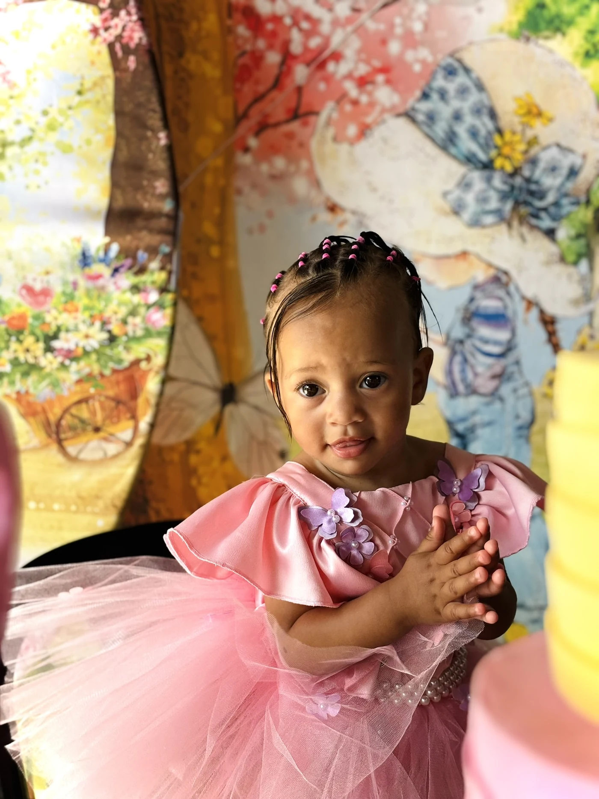
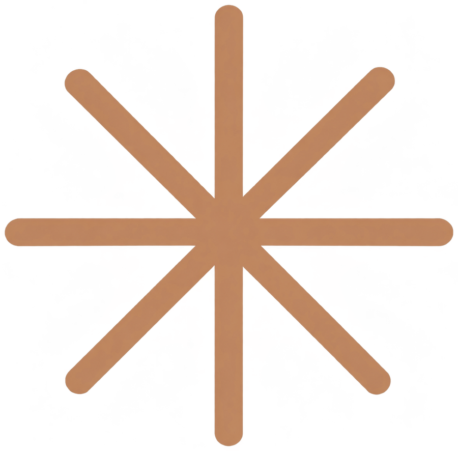

COM CARINHO, PARA VOCÊS
Seus registros
chegaram!
Luna & Família
Cada abraço, sorriso e detalhe merece ser revivido. Preparei esta página com muito carinho para vocês guardarem e compartilharem essas lembranças em família.
Ver as fotografiasGALERIA DE FOTOS✧ Uma história linda, feita de pequenos grandes momentos.

LUNA&FAMÍLIAMEMÓRIAS

AMOR✦DETALHES✦MEMÓRIAS✦PARA SEMPRE
UM POUQUINHO DAS MEMÓRIAS
Memórias que
ficam para sempre.
Cada foto guarda um pedacinho desse dia tão especial. Toque em uma imagem para vê-la com mais detalhes.
AGORA É COM VOCÊS
Reviva. Baixe.
Guarde para sempre.
Todos os registros estão reunidos em uma pasta especial. Toquem no botão abaixo para acessar a galeria completa e baixar as fotos.
Acessar a galeria completaPASTA DE FOTOS NO GOOGLE DRIVE DICA: NO PASTA DE FOTOS NO GOOGLE DRIVE, USE A OPÇÃO “FAZER DOWNLOAD” PARA SALVAR OS ARQUIVOS.